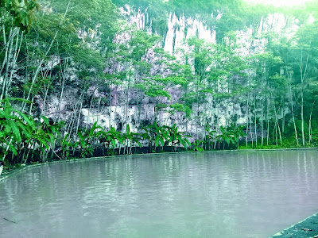
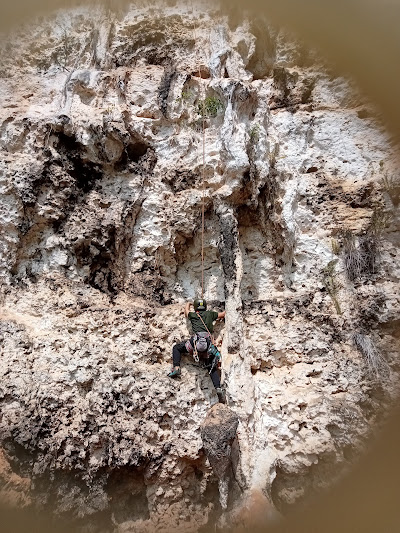
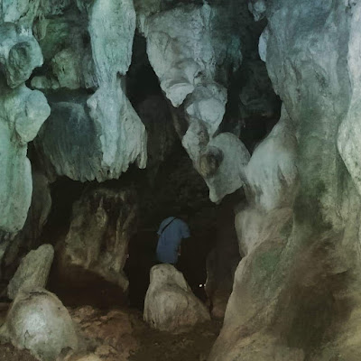

Telaga Lebengan
Nikmati ketenangan dan keindahan telaga alami yang menjadi sumber kehidupan bagi warga sekitar. Tempat yang sempurna untuk bersantai dan melepaskan penat dari hiruk pikuk kota.
Lihat Lokasi →

Tebing Lebengan
Tantang adrenalin Anda dengan memanjat tebing-tebing kapur yang menjulang gagah. Menawarkan berbagai rute untuk level pemula hingga profesional dengan pemandangan yang luar biasa.
Lihat Lokasi →

Goa Pakubon
Jelajahi keindahan bawah tanah di goa-goa alami yang dihiasi stalaktit dan stalagmit menakjubkan. Sebuah petualangan misterius yang tak terlupakan menanti Anda.
Lihat Lokasi →